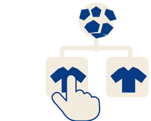
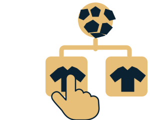

Pick del editor
Cargando Pick editorial…
Últimos Picks
Desliza hacia abajo para ver más Picks ↓
Historial de recetas
Cargando resultados…
Mejores Chefs
¿Cómo se calculan los puntos?
¡Atención: fallar resta puntos! Publicar más Picks no da puntos por sí solo. Cada acierto suma el valor absoluto de la cuota americana ÷ 100; cada fallo resta esa misma cantidad; si se anula, 0 puntos. Ejemplo: una cuota +250 suma 2,50 puntos al acertar y resta 2,50 al fallar. Las selecciones de ¿Quién será campeón? también cuentan: al acertar sumas los puntos indicados junto al escudo; si fallas, sumas 0. Ranking mensual: empieza de cero el día 1 de cada mes (hora de Toronto, según la fecha de confirmación). Ranking histórico: conserva todos los resultados.
Peores Chefs
Pick histórico
Cargando Pick…
Actualidad
Lo más debatido
Takes públicos con respuestas verificadas. Abre cada conversación para participar.
Opinadores distinguidos
Las voces más apoyadas y cuestionadas, con sus votos, respuestas y perfiles originales.
Últimas noticias
Lo más debatido
Opinadores distinguidos
No hay artículos para mostrar
Intenta con otros términos de búsqueda o cambia la categoría.
Cargando los Takes destacados…
Takes populares
- Cargando Takes…
Takes impopulares
- Cargando Takes…
Genios
| Pos. | Aficionado · Mejor Take | Acierto | Pts |
|---|---|---|---|
| Cargando clasificación… | |||
Anoetos
| Pos. | Aficionado · Mejor Take | Acierto | Pts |
|---|---|---|---|
| Cargando clasificación… | |||
Take histórico
Cargando Take…
Más noticias
Historias de CAM SPORTSCargando Takes…
Takes populares
Takes impopulares
Últimos Takes
La quiniela de fútbol


Top 10 · NFL
Los admins confirman cada acierto y asignan de 1 a 100 puntos. Un fallo vale 0.
SAVANT
Los usuarios con más puntos por Takes acertados.
ROOKIE
Los usuarios con más Takes fallados confirmados.
Demuestra tu conocimiento
Tu opinión queda guardada.
¿Quién será campeón?
Esto también es un Take: una predicción de quién será campeón.
Clasificación de La Quiniela
¿Cómo funcionan los puntos?
Cada acierto suma 2 puntos. Si fallas no pierdes nada: 0 puntos. Un empate NFL o una anulación también vale 0.
Partido bonus. Cada semana el partido más parejo según las probabilidades lleva la etiqueta «Bonus +5». Si lo aciertas y tu equipo fue el menos elegido (o fuiste el único que acertó), sumas 5 puntos extra: 7 en total. Si gana el equipo que eligió la mayoría, son los 2 de siempre. Cuánta gente eligió cada lado se ve cuando empieza el partido.
Esos puntos deciden tu clasificación y el ascenso o descenso mensual en la liga NFL. Puedes editar hasta el inicio del partido.
El laurel. Una vez por jornada puedes ponerle el laurel a un partido que ya pronosticaste: si aciertas, suma el doble (4 puntos, más el bonus si toca); si fallas, 0. Puedes cambiarlo de partido hasta que empiece el que lo lleva.
Clasificación de La Quiniela
¿Cómo funcionan los puntos?
Cada acierto suma 2 puntos, ya sea local, empate o visitante. Si fallas no pierdes nada: 0 puntos. Una anulación también vale 0.
Partido bonus. En cada jornada de cada competición, el partido más parejo según las probabilidades lleva la etiqueta «Bonus +5». Si lo aciertas y tu opción fue la menos elegida (o fuiste el único que acertó), sumas 5 puntos extra: 7 en total. Si gana lo que eligió la mayoría, son los 2 de siempre. Cuánta gente eligió cada opción se ve cuando empieza el partido.
Esos puntos deciden tu clasificación y el ascenso o descenso mensual en la liga de Fútbol. Puedes editar hasta el inicio del partido.
Administrar · Puntuar Takes
Primero calcula la dificultad de cada Take (tabla de la liga, nivel de sorpresa o cuota) y después marca si se cumplió. Los puntos (1–20) salen solos: lo obvio vale poco y la sorpresa vale mucho. Si recalculas un Take ya puntuado, su puntuación se actualiza.
Take histórico
El Take acertado con más puntos de todo el historial de este deporte.
Cargando Take histórico…